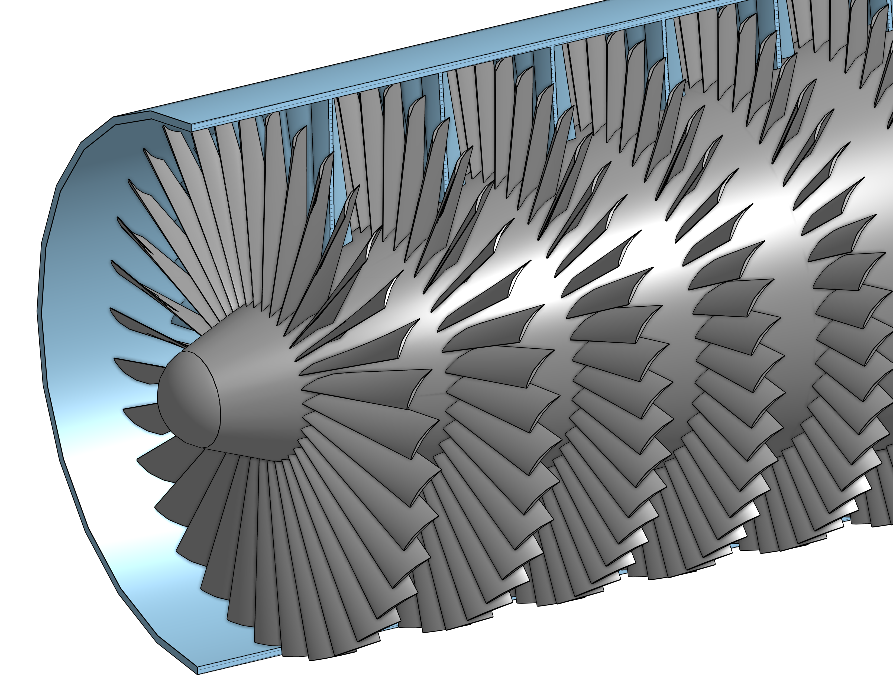
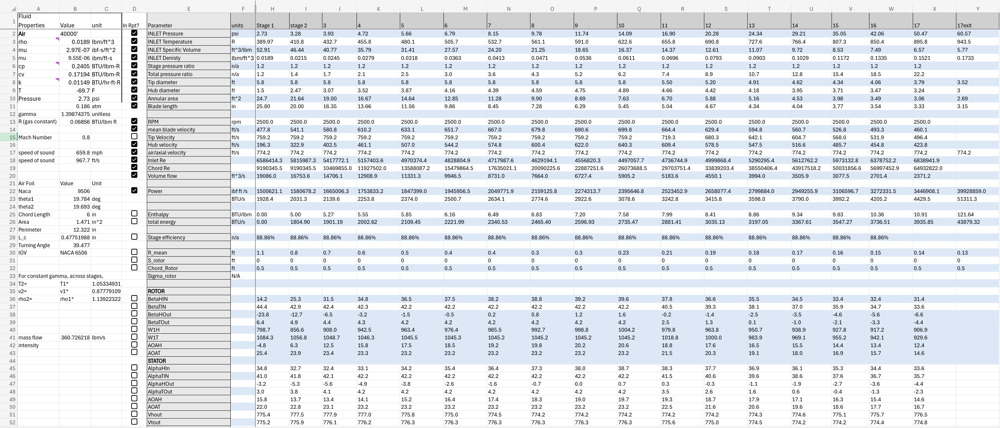
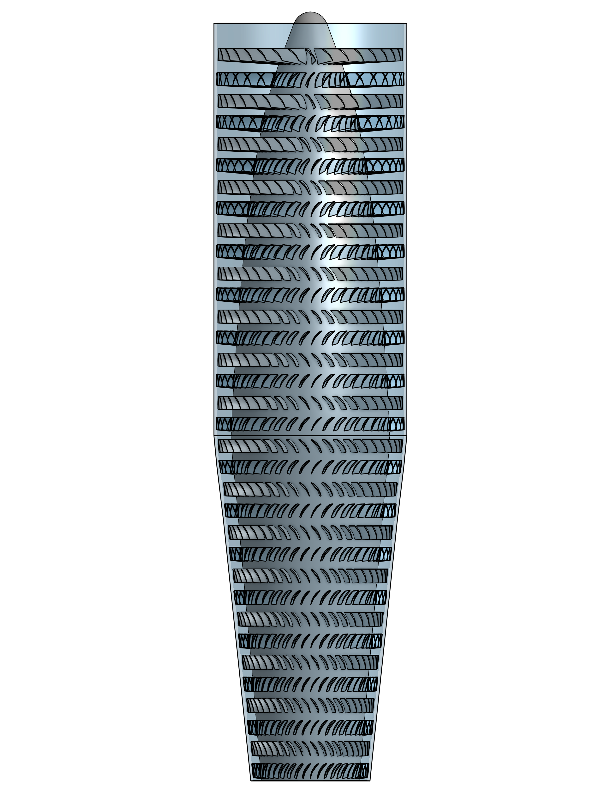
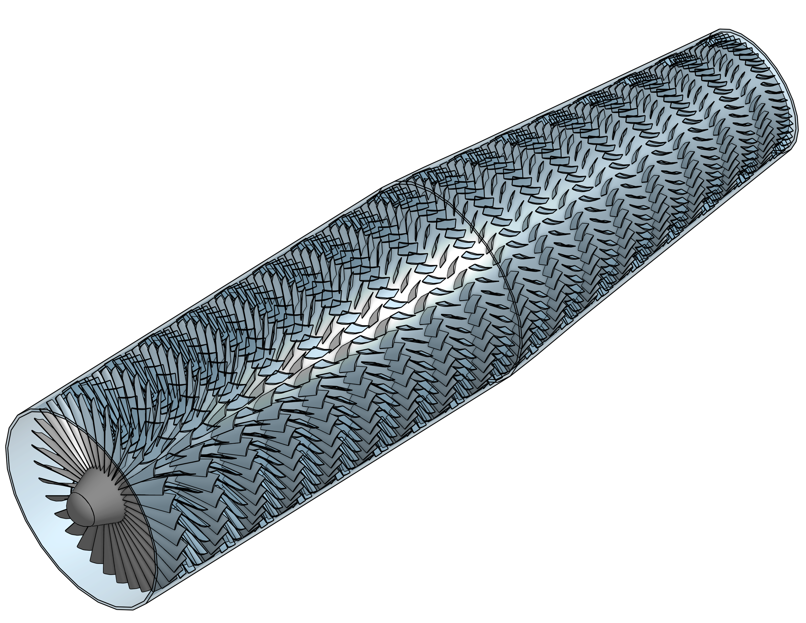
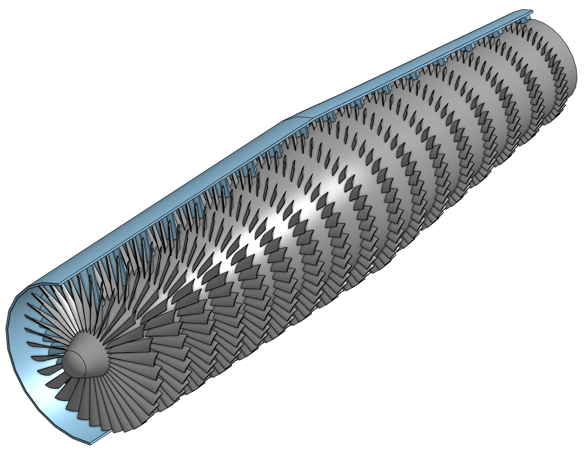
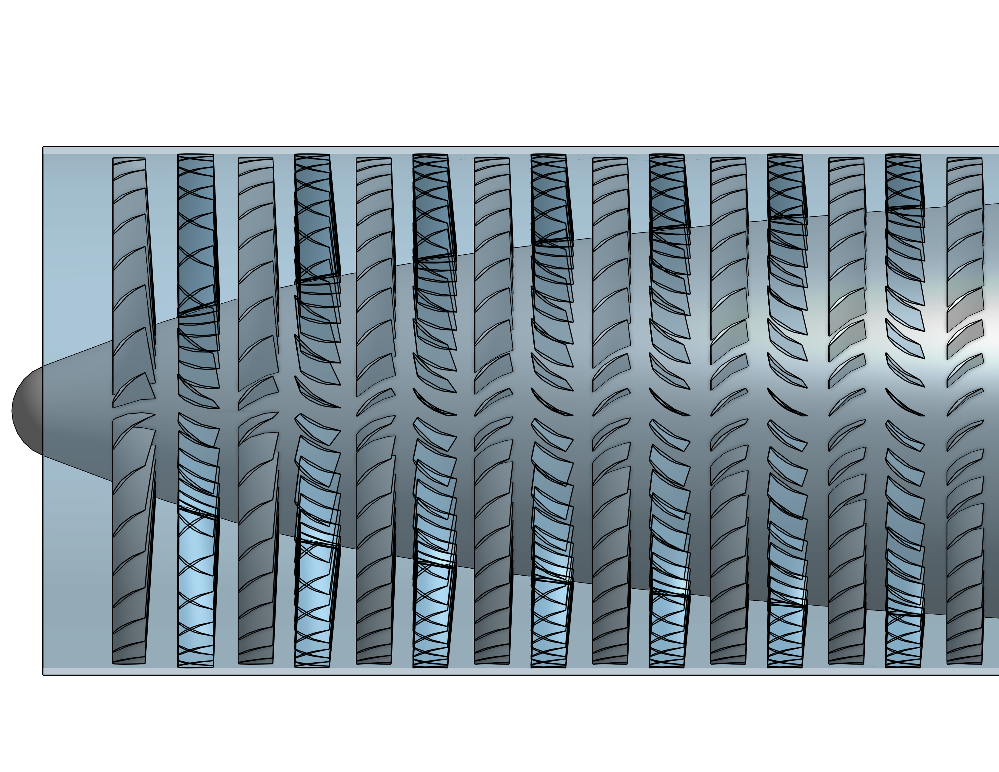
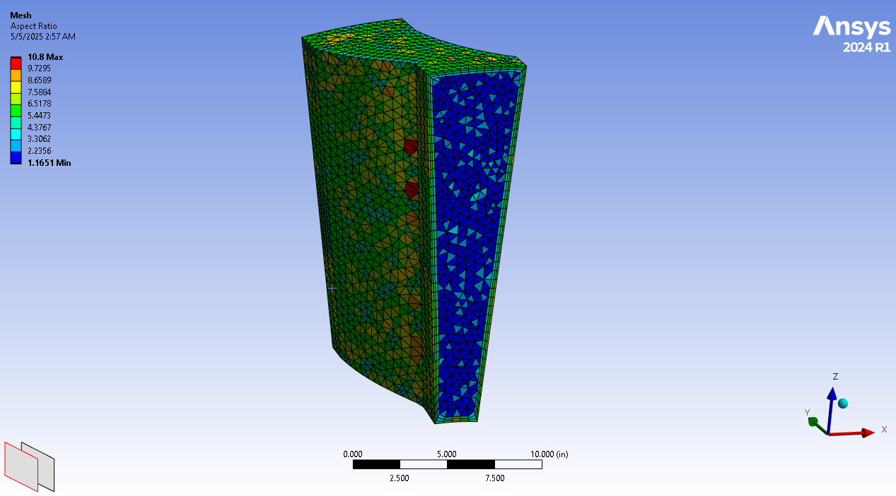
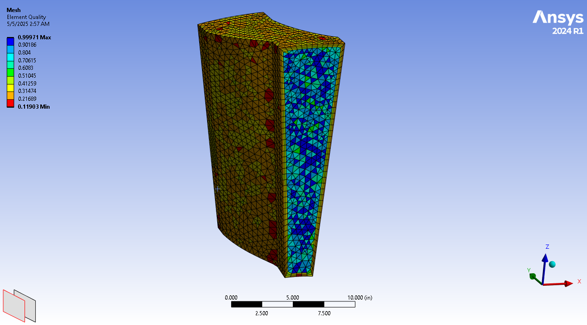

Designed and simulated a multi-stage axial compressor capable of
achieving a 20:1 pressure ratio at 40,000 ft.
Simulations were performed in ANSYS Fluent using detailed stage-by-stage
geometry and validated at both altitude and sea-level conditions.
| Parameter | Value | Unit |
|---|---|---|
| Rotational speed | 2500 | rpm |
| Outer Diameter | 5.96 | ft |
| Length | 23.4 | ft |
| Maximum blade length | 25.8 | in |
| Minimum blade length | 3.2 | in |
| Dry Mass | 11000 | lbm |
| Blade/Vane shape | NACA 9506 | - |
| Power at 40k | 1087 | HP |
| Compression Ratio 40K | 22 | — |
| Power at STP | 4902 | HP |
| Compression Ratio STP | 22 | — |

Stage-wise hand calculation to determine stage inlet & outlet area and angles of attack for rotors & stators required to meet the design criteria.
Built fully Parametric CAD Model in Onshape with ability to rapidly adjust the following design parameters for each stage:

|
 |
 |
|
 |


Table 1: Performance metrics for maximum operating altitude.
| 40,000 Feet | Inlet | Outlet | Unit |
|---|---|---|---|
| Pressure | 2.7 | 103 | psi |
| Temperature | -69.7 | 1592 | F |
Table 2: Performance metrics at sea level.
| Sea level | Inlet | Outlet | Unit |
|---|---|---|---|
| Pressure | 14.7 | 223 | psi |
| Temperature | 59.0 | 1253 | F |
More information about this project in the full
report
Original
Assignment